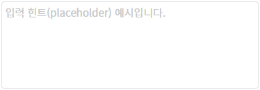
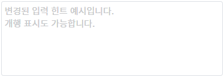

Textarea의 속성 'placeholder'와 함수 'setPlaceholder' 예제입니다.
속성 'placeholder'은 입력 필드에 사용자에게 입력해야 할 내용이나 형식을 알려주는 힌트 문자열을 출력하는 기능을 제공합니다. 이 힌트는 입력 필드에 아무 내용도 입력하지 않은 경우에 표시되며, 사용자가 입력을 시작하면 문자열은 사라집니다.
함수 'setPlaceholder'는 속성 'placeholder'의 값을 변경하는 기능을 제공합니다.
속성 'placeholder'와 함수 'setPlaceholder'로 입력 필드에 힌트 문자열 지정하기
STEP 1. 실행된 결과를 확인합니다.
Textarea의 입력 필드에 문자열 '입력 힌트 예시입니다.'가 표시됩니다. (이 문자열은 입력 필드에 아무 내용도 입력하지 않은 경우에 표시되며, 사용자가 입력을 시작하면 문자열은 사라집니다.)
그림 1.브라우저(Chrome) 실행 예시

STEP 2. 스크립트로 힌트 문자열 변경하기
버튼 'palceHolder' 문자열 변경하기를 클릭합니다.STEP 3. 실행된 결과를 확인합니다.
입력 필드에 문자열이 '변경된 입력 힌트 예시입니다. 개행 표시도 가능합니다.'로 변경됩니다.
그림 2.브라우저(Chrome) 실행 예시

Textarea의 속성을 정의합니다.
[필수] placeholder="문자열"
예시) placeholder="입력 힌트 예시입니다."
스크립트를 작성합니다.
Textarea의 함수 'setPlaceholder'를 이용하여 스크립트를 작성합니다. 세부 지정은 아래의 스크립트 예시에 작성되어 있습니다.
스크립트
//예제 파일에서는 스크립트 'scwin.btn_exam1_1_onclick'에 작성되어 있습니다. // Textarea 'txa_exam1'의 속성 'placeholder' 설정 값을 변경합니다. txa_exam1.setPlaceholder("변경된 입력 힌트 예시입니다.\n개행 표시도 가능합니다.");
placeholder
setPlaceholder( placeholderStr )